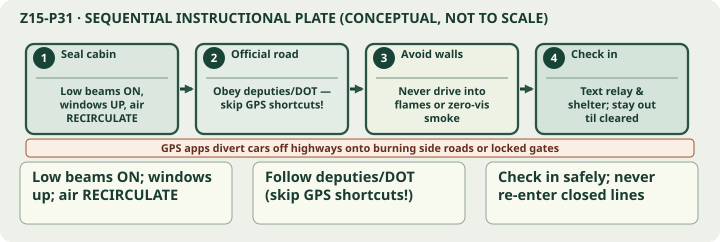

Z15-P31 · Disaster scenarios · New manuscript
Drive safely through wildfire evacuation corridors and avoid trap roads
Reach clear safe shelter during wildfire evacuations without stalling in zero-visibility smoke or following GPS onto burning side roads.
When it applies · Motorists evacuating active wildfire zones or encountering sudden highway smoke plumes.
Equipment · Vehicle headlights, HVAC set to RECIRCULATE, wet cotton cloths/N95 backup, paper road map, and live law-enforcement/DOT directions.

Actions
- Leave early using official open routes. Follow responders’ guidance if smoke cuts visibility. Closed windows and recirculation may reduce particles briefly, but they do not make a vehicle safe in smoke, fire or carbon monoxide.[D06, D08]
- Do NOT follow smartphone GPS "shortcut" detours onto narrow gravel forest roads or dead-end side streets—apps routinely route evacuees straight into active fire flanks or locked logging gates; obey live deputies, fire crews, and official DOT closures.[D14, D08]
- Once clear of the fire perimeter, check in with your out-of-area relay contact and official evacuation shelter registry, and NEVER attempt to drive back inside fire lines until authorities formally lift closures.[D14, D08]
Failure recognition · Turning off a slow official evacuation highway onto a GPS-suggested forest shortcut that dead-ends behind burning timber.[D14, D08]
Verify · Confirm headlights on, windows shut, cabin air on RECIRCULATE, official open routes followed, and post-arrival check-in sent.[D08, D14]
Stop or change course · If sudden fire blocks every route ahead with zero safe escape, turn around early if open—never drive straight into active flames or dense zero-visibility smoke walls.[D08, C19]
Evidence and editorial notes
- C19 · FEMA / Ready.gov · Wildfires (current web edition)
- Section: Wildfires > Stay Safe and Smoke Protection · Conditions: Approaching wildfire or heavy smoke in camp or community
Support: Evacuate early along open routes per official orders, protect airways from heavy smoke, and avoid turning back into active fire corridors.
Limitations: Cloth face coverings do not filter fine wildfire smoke particles; fitted particulate respirators or clean indoor air are distinct interventions. · Conflicting evidence: None; coordinates with NWS-WILDFIRE.
Editorial note: Covers wildfire escape and smoke decision thresholds in Z01/Z03. · Specialist reviewer: Emergency management and fire safety
Primary source · checked 2026-11-24 - D06 · US EPA / AirNow · Wildfires and Air Quality (current web edition)
- Section: Wildfires and Air Quality > AQI Categories and Exposure Reduction · Conditions: Regional or local wildfire smoke plumes impacting air quality
Support: Monitor live official AirNow AQI readings and local health advisories; move indoors with windows/doors closed during Unhealthy AQI levels, limit heavy exertion, and use properly fitted NIOSH-approved N95/P100 particulate respirators if essential outdoor exposure cannot be avoided.
Limitations: Surgical masks, bandanas, and dust masks do not seal against fine PM2.5 wildfire smoke particles; N95s do not protect against carbon monoxide or low oxygen. · Conflicting evidence: None; complements C19 and READY-WILDFIRE.
Editorial note: Grounds AQI smoke thresholds and respiratory protection limits in Z15. · Specialist reviewer: Environmental health and air-quality specialist
Primary source · checked 2026-11-24 - D08 · FEMA / Ready.gov · Wildfires (current web edition)
- Section: Stay safe during wildfire; evacuate when directed · Conditions: Wildfire threat with local warning and evacuation system
Support: Plan to leave early and follow official open routes and local evacuation orders. Return only when allowed.
Limitations: Ready–Set–Go is one local vocabulary. Vehicle staging is editorial and does not justify delay after a warning. · Conflicting evidence: See A02 claim audit for boundaries.
Editorial note: Grounds wildfire evacuation readiness and route-abort decisions. · Specialist reviewer: Wildland fire management and emergency services
Primary source · checked 2026-11-24 - D14 · FEMA / Ready.gov · Evacuation (current web edition)
- Section: Before, during and after evacuation · Conditions: Official evacuation or a preplanned, safely accessible departure
Support: Prepare a go-kit, routes, transport and a contact plan. Follow official routes and use the locally indicated registration or reunification channel.
Limitations: Shelter accessibility and animal accommodations require local and ADA guidance; no fixed national website is assumed. · Conflicting evidence: See A02 claim audit for boundaries.
Editorial note: Core evacuation execution and accountability evidence in Z15. · Specialist reviewer: Emergency management and transportation safety
Primary source · checked 2026-11-24
Source lineage · FEMA Ready.gov Wildfires and Evacuation; new manuscript · Classification · New manuscript.